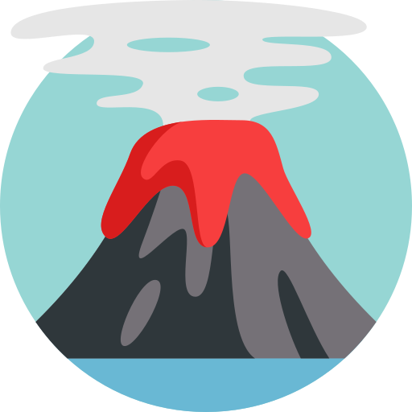
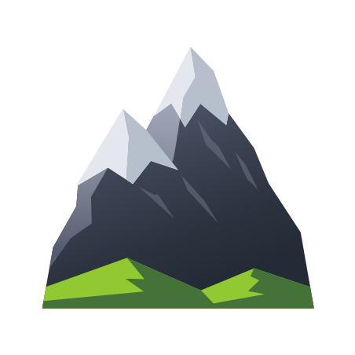

<!DOCTYPE html>

<head>
    <meta http-equiv="content-type" content="text/html; charset=UTF-8" />
    <script>
        L_NO_TOUCH = false;
        L_DISABLE_3D = false;
    </script>
    <style>
        html,
        body {
            width: 100%;
            height: 100%;
            margin: 0;
            padding: 0;
        }
    </style>
    <style>
        #map {
            position: absolute;
            top: 0;
            bottom: 0;
            right: 0;
            left: 0;
        }
    </style>
    <script src="https://cdn.jsdelivr.net/npm/leaflet@1.6.0/dist/leaflet.js"></script>
    <script src="https://code.jquery.com/jquery-1.12.4.min.js"></script>
    <script src="https://maxcdn.bootstrapcdn.com/bootstrap/3.2.0/js/bootstrap.min.js"></script>
    <script
        src="https://cdnjs.cloudflare.com/ajax/libs/Leaflet.awesome-markers/2.0.2/leaflet.awesome-markers.js"></script>
    <link rel="stylesheet" href="https://cdn.jsdelivr.net/npm/leaflet@1.6.0/dist/leaflet.css" />
    <link rel="stylesheet" href="https://maxcdn.bootstrapcdn.com/bootstrap/3.2.0/css/bootstrap.min.css" />
    <link rel="stylesheet" href="https://maxcdn.bootstrapcdn.com/bootstrap/3.2.0/css/bootstrap-theme.min.css" />
    <link rel="stylesheet" href="https://maxcdn.bootstrapcdn.com/font-awesome/4.6.3/css/font-awesome.min.css" />
    <link rel="stylesheet"
        href="https://cdnjs.cloudflare.com/ajax/libs/Leaflet.awesome-markers/2.0.2/leaflet.awesome-markers.css" />
    <link rel="stylesheet"
        href="https://cdn.jsdelivr.net/gh/python-visualization/folium/folium/templates/leaflet.awesome.rotate.min.css" />
    <meta name="viewport" content="width=device-width,
                initial-scale=1.0, maximum-scale=1.0, user-scalable=no" />
    <style>
        #map_df383965deb24aca8681db3173266c2c {
            position: relative;
            width: 100.0%;
            height: 100.0%;
            left: 0.0%;
            top: 0.0%;
        }
    </style>
</head>

<body>
    <div class="folium-map" id="map_df383965deb24aca8681db3173266c2c"></div>
</body>
<script>
    var map_df383965deb24aca8681db3173266c2c = L.map(
        "map_df383965deb24aca8681db3173266c2c",
        {
            center: [22.914377561511873, 79.65930938145928],
            crs: L.CRS.EPSG3857,
            maxBounds: [[-90, -180], [90, 180]],
            zoom: 5,
            zoomControl: true,
            preferCanvas: false,
        }
    );
    var tile_layer_6800ba2d619c4e64808eb0acd3673685 = L.tileLayer(
        "https://{s}.tile.openstreetmap.org/{z}/{x}/{y}.png",
        { "attribution": "Data by \u0026copy; \u003ca href=\"http://openstreetmap.org\"\u003eOpenStreetMap\u003c/a\u003e, under \u003ca href=\"http://www.openstreetmap.org/copyright\"\u003eODbL\u003c/a\u003e.", "detectRetina": false, "maxNativeZoom": 18, "maxZoom": 18, "minZoom": 2.5, "noWrap": false, "opacity": 1, "subdomains": "abc", "tms": false }
    ).addTo(map_df383965deb24aca8681db3173266c2c);
    var feature_group_5153d5c2f4704f36859f3ac3396a3ccd = L.featureGroup(
        {}
    ).addTo(map_df383965deb24aca8681db3173266c2c);
    var marker_b43aa8103111417395e08d5d40148690 = L.marker(
        [35.360625481685354, 138.7273631520154],
        {}
    ).addTo(feature_group_5153d5c2f4704f36859f3ac3396a3ccd);
    var icon_6fcb1751096046639abb10ab9dd2dc24 = L.AwesomeMarkers.icon(
        { "extraClasses": "fa-rotate-0", "icon": "flag", "iconColor": "white", "markerColor": "orange", "prefix": "glyphicon" }
    );
    marker_b43aa8103111417395e08d5d40148690.setIcon(icon_6fcb1751096046639abb10ab9dd2dc24);
    var popup_6d930f3077f64643b9e4f91ae21be7a1 = L.popup({ "maxWidth": 100 });
    var html_49c8fc56d1974a23a42ac1d6c614f289 = $(`<div id="html_49c8fc56d1974a23a42ac1d6c614f289" style="width: 100.0%; height: 100.0%;"> <u>3776 m</u></div>`)[0];
    popup_6d930f3077f64643b9e4f91ae21be7a1.setContent(html_49c8fc56d1974a23a42ac1d6c614f289);
    marker_b43aa8103111417395e08d5d40148690.bindPopup(popup_6d930f3077f64643b9e4f91ae21be7a1)
        ;
    marker_b43aa8103111417395e08d5d40148690.bindTooltip(
        `<div>
                     <strong>Mount Fuji, Japan</strong>
                 </div>`,
        { "sticky": true }
    );
    var marker_39be3f78ec21457b8e9b3e7fd4cfd8df = L.marker(
        [63.63040668923757, -19.60673461436549],
        {}
    ).addTo(feature_group_5153d5c2f4704f36859f3ac3396a3ccd);
    var icon_a55a088dc572409a9baa6ca7b15bf7ef = L.AwesomeMarkers.icon(
        { "extraClasses": "fa-rotate-0", "icon": "flag", "iconColor": "white", "markerColor": "green", "prefix": "glyphicon" }
    );
    marker_39be3f78ec21457b8e9b3e7fd4cfd8df.setIcon(icon_a55a088dc572409a9baa6ca7b15bf7ef);
    var popup_2cb0d11269e04e648582aee46c42c28c = L.popup({ "maxWidth": 100 });
    var html_a96cba86b83c4500994bfdab4bfca10e = $(`<div id="html_a96cba86b83c4500994bfdab4bfca10e" style="width: 100.0%; height: 100.0%;"> <u>1666 m</u></div>`)[0];
    popup_2cb0d11269e04e648582aee46c42c28c.setContent(html_a96cba86b83c4500994bfdab4bfca10e);
    marker_39be3f78ec21457b8e9b3e7fd4cfd8df.bindPopup(popup_2cb0d11269e04e648582aee46c42c28c)
        ;
    marker_39be3f78ec21457b8e9b3e7fd4cfd8df.bindTooltip(
        `<div>
                     <strong>Eyjafjallajökull, Iceland</strong>
                 </div>`,
        { "sticky": true }
    );
    var marker_4fcac9c3a04d41f2b1aa3068090afc4f = L.marker(
        [19.47246144478291, -155.59229257502383],
        {}
    ).addTo(feature_group_5153d5c2f4704f36859f3ac3396a3ccd);
    var icon_b0266ab7fe90436ab4cabc4634e3c51a = L.AwesomeMarkers.icon(
        { "extraClasses": "fa-rotate-0", "icon": "flag", "iconColor": "white", "markerColor": "red", "prefix": "glyphicon" }
    );
    marker_4fcac9c3a04d41f2b1aa3068090afc4f.setIcon(icon_b0266ab7fe90436ab4cabc4634e3c51a);
    var popup_020585138c9242c7b2572c9856f669a7 = L.popup({ "maxWidth": 100 });
    var html_6cbbb6babcff406cb18d77d44ce601fd = $(`<div id="html_6cbbb6babcff406cb18d77d44ce601fd" style="width: 100.0%; height: 100.0%;"> <u>4169 m</u></div>`)[0];
    popup_020585138c9242c7b2572c9856f669a7.setContent(html_6cbbb6babcff406cb18d77d44ce601fd);
    marker_4fcac9c3a04d41f2b1aa3068090afc4f.bindPopup(popup_020585138c9242c7b2572c9856f669a7)
        ;
    marker_4fcac9c3a04d41f2b1aa3068090afc4f.bindTooltip(
        `<div>
                     <strong>Mauna Loa, Hawaii</strong>
                 </div>`,
        { "sticky": true }
    );
    var marker_0cd7411b10834d4ba88fae458520a391 = L.marker(
        [37.751789017910944, 14.994602671943335],
        {}
    ).addTo(feature_group_5153d5c2f4704f36859f3ac3396a3ccd);
    var icon_74e90967bdb04e3ea127338a12213938 = L.AwesomeMarkers.icon(
        { "extraClasses": "fa-rotate-0", "icon": "flag", "iconColor": "white", "markerColor": "orange", "prefix": "glyphicon" }
    );
    marker_0cd7411b10834d4ba88fae458520a391.setIcon(icon_74e90967bdb04e3ea127338a12213938);
    var popup_f93b86bd419745bfb5e7dbcef5f8e60c = L.popup({ "maxWidth": 100 });
    var html_c60659ec8ab8480395a213e47ff88544 = $(`<div id="html_c60659ec8ab8480395a213e47ff88544" style="width: 100.0%; height: 100.0%;"> <u>3350 m</u></div>`)[0];
    popup_f93b86bd419745bfb5e7dbcef5f8e60c.setContent(html_c60659ec8ab8480395a213e47ff88544);
    marker_0cd7411b10834d4ba88fae458520a391.bindPopup(popup_f93b86bd419745bfb5e7dbcef5f8e60c)
        ;
    marker_0cd7411b10834d4ba88fae458520a391.bindTooltip(
        `<div>
                     <strong>Mount Etna, Italy</strong>
                 </div>`,
        { "sticky": true }
    );
    var marker_88ad6d043081465caec322fcf1a4dc6e = L.marker(
        [14.949405490299348, -24.34043356575871],
        {}
    ).addTo(feature_group_5153d5c2f4704f36859f3ac3396a3ccd);
    var icon_3d39fb61766f4f9fbc39e796f8a18415 = L.AwesomeMarkers.icon(
        { "extraClasses": "fa-rotate-0", "icon": "flag", "iconColor": "white", "markerColor": "orange", "prefix": "glyphicon" }
    );
    marker_88ad6d043081465caec322fcf1a4dc6e.setIcon(icon_3d39fb61766f4f9fbc39e796f8a18415);
    var popup_7c94cb5532154a94ab8f473616398723 = L.popup({ "maxWidth": 100 });
    var html_096d1f83eaaf4adeb53316c4bec889e5 = $(`<div id="html_096d1f83eaaf4adeb53316c4bec889e5" style="width: 100.0%; height: 100.0%;"> <u>2829 m</u></div>`)[0];
    popup_7c94cb5532154a94ab8f473616398723.setContent(html_096d1f83eaaf4adeb53316c4bec889e5);
    marker_88ad6d043081465caec322fcf1a4dc6e.bindPopup(popup_7c94cb5532154a94ab8f473616398723)
        ;
    marker_88ad6d043081465caec322fcf1a4dc6e.bindTooltip(
        `<div>
                     <strong>Pico de Fogo, Cape Verde</strong>
                 </div>`,
        { "sticky": true }
    );
    var marker_9e09ea33d6954a8d86f8e4d05fe27b07 = L.marker(
        [14.382318826900988, -90.60150755067576],
        {}
    ).addTo(feature_group_5153d5c2f4704f36859f3ac3396a3ccd);
    var icon_c0ac5ea6b2bd404b81aa5b980873caae = L.AwesomeMarkers.icon(
        { "extraClasses": "fa-rotate-0", "icon": "flag", "iconColor": "white", "markerColor": "orange", "prefix": "glyphicon" }
    );
    marker_9e09ea33d6954a8d86f8e4d05fe27b07.setIcon(icon_c0ac5ea6b2bd404b81aa5b980873caae);
    var popup_f9a30222beed42ae8466cbb0ddfb8646 = L.popup({ "maxWidth": 100 });
    var html_3ba9c70ec5f3445eb4321417ccf71f0b = $(`<div id="html_3ba9c70ec5f3445eb4321417ccf71f0b" style="width: 100.0%; height: 100.0%;"> <u>2552 m</u></div>`)[0];
    popup_f9a30222beed42ae8466cbb0ddfb8646.setContent(html_3ba9c70ec5f3445eb4321417ccf71f0b);
    marker_9e09ea33d6954a8d86f8e4d05fe27b07.bindPopup(popup_f9a30222beed42ae8466cbb0ddfb8646)
        ;
    marker_9e09ea33d6954a8d86f8e4d05fe27b07.bindTooltip(
        `<div>
                     <strong>Pacaya, Guatemala</strong>
                 </div>`,
        { "sticky": true }
    );
    var marker_8e197af6fc37448b9cdc3c5eea216492 = L.marker(
        [40.82247898314849, 14.428875335060807],
        {}
    ).addTo(feature_group_5153d5c2f4704f36859f3ac3396a3ccd);
    var icon_c93593bd553b4ecd9d1ea20301fd0ec7 = L.AwesomeMarkers.icon(
        { "extraClasses": "fa-rotate-0", "icon": "flag", "iconColor": "white", "markerColor": "green", "prefix": "glyphicon" }
    );
    marker_8e197af6fc37448b9cdc3c5eea216492.setIcon(icon_c93593bd553b4ecd9d1ea20301fd0ec7);
    var popup_deba3932fdc142eca2208cce4599e7e2 = L.popup({ "maxWidth": 100 });
    var html_a9d045b3598a47b7a0c6c57a07f3f98b = $(`<div id="html_a9d045b3598a47b7a0c6c57a07f3f98b" style="width: 100.0%; height: 100.0%;"> <u>1281 m</u></div>`)[0];
    popup_deba3932fdc142eca2208cce4599e7e2.setContent(html_a9d045b3598a47b7a0c6c57a07f3f98b);
    marker_8e197af6fc37448b9cdc3c5eea216492.bindPopup(popup_deba3932fdc142eca2208cce4599e7e2)
        ;
    marker_8e197af6fc37448b9cdc3c5eea216492.bindTooltip(
        `<div>
                     <strong>Mount Vesuvius, Italy</strong>
                 </div>`,
        { "sticky": true }
    );
    var marker_900d76ac821342ed9de833b84c3c33ca = L.marker(
        [-39.42024529496876, -71.93964090700042],
        {}
    ).addTo(feature_group_5153d5c2f4704f36859f3ac3396a3ccd);
    var icon_f10acff17acb4d7a87ed52f4f5bb815a = L.AwesomeMarkers.icon(
        { "extraClasses": "fa-rotate-0", "icon": "flag", "iconColor": "white", "markerColor": "orange", "prefix": "glyphicon" }
    );
    marker_900d76ac821342ed9de833b84c3c33ca.setIcon(icon_f10acff17acb4d7a87ed52f4f5bb815a);
    var popup_2ad2898641cc4fe39e3fdd2452bccf06 = L.popup({ "maxWidth": 100 });
    var html_4b53c43edd8a4909949b21a95f064f68 = $(`<div id="html_4b53c43edd8a4909949b21a95f064f68" style="width: 100.0%; height: 100.0%;"> <u>2847 m</u></div>`)[0];
    popup_2ad2898641cc4fe39e3fdd2452bccf06.setContent(html_4b53c43edd8a4909949b21a95f064f68);
    marker_900d76ac821342ed9de833b84c3c33ca.bindPopup(popup_2ad2898641cc4fe39e3fdd2452bccf06)
        ;
    marker_900d76ac821342ed9de833b84c3c33ca.bindTooltip(
        `<div>
                     <strong>Villarrica, Chile</strong>
                 </div>`,
        { "sticky": true }
    );
    var marker_16beb7829fdd4b5ebd995070cf3c1de7 = L.marker(
        [54.75417706840114, -163.9702357445948],
        {}
    ).addTo(feature_group_5153d5c2f4704f36859f3ac3396a3ccd);
    var icon_f4c1f49626d14de7ae7399166d722a77 = L.AwesomeMarkers.icon(
        { "extraClasses": "fa-rotate-0", "icon": "flag", "iconColor": "white", "markerColor": "orange", "prefix": "glyphicon" }
    );
    marker_16beb7829fdd4b5ebd995070cf3c1de7.setIcon(icon_f4c1f49626d14de7ae7399166d722a77);
    var popup_56d1b3079ee84f17bc18b4416b525f50 = L.popup({ "maxWidth": 100 });
    var html_1c36c5faa0114fdf95dd410136beb94e = $(`<div id="html_1c36c5faa0114fdf95dd410136beb94e" style="width: 100.0%; height: 100.0%;"> <u>2857 m</u></div>`)[0];
    popup_56d1b3079ee84f17bc18b4416b525f50.setContent(html_1c36c5faa0114fdf95dd410136beb94e);
    marker_16beb7829fdd4b5ebd995070cf3c1de7.bindPopup(popup_56d1b3079ee84f17bc18b4416b525f50)
        ;
    marker_16beb7829fdd4b5ebd995070cf3c1de7.bindTooltip(
        `<div>
                     <strong>Shishaldin, Alaska</strong>
                 </div>`,
        { "sticky": true }
    );
    var marker_1acc136c4da94b1bb02f2ce2dc8c97f9 = L.marker(
        [-7.94247595743476, 112.953013075075],
        {}
    ).addTo(feature_group_5153d5c2f4704f36859f3ac3396a3ccd);
    var icon_05b0e135041c4cb984b24ee05bffa287 = L.AwesomeMarkers.icon(
        { "extraClasses": "fa-rotate-0", "icon": "flag", "iconColor": "white", "markerColor": "orange", "prefix": "glyphicon" }
    );
    marker_1acc136c4da94b1bb02f2ce2dc8c97f9.setIcon(icon_05b0e135041c4cb984b24ee05bffa287);
    var popup_32051342e5214e5e8446860248f44d84 = L.popup({ "maxWidth": 100 });
    var html_abe20cde5f17422cb04b98cd7882250c = $(`<div id="html_abe20cde5f17422cb04b98cd7882250c" style="width: 100.0%; height: 100.0%;"> <u>2329 m</u></div>`)[0];
    popup_32051342e5214e5e8446860248f44d84.setContent(html_abe20cde5f17422cb04b98cd7882250c);
    marker_1acc136c4da94b1bb02f2ce2dc8c97f9.bindPopup(popup_32051342e5214e5e8446860248f44d84)
        ;
    marker_1acc136c4da94b1bb02f2ce2dc8c97f9.bindTooltip(
        `<div>
                     <strong>Mount Bromo, Indonesia</strong>
                 </div>`,
        { "sticky": true }
    );
    var marker_d04276280bac49a78f9c46b99b0fe0d5 = L.marker(
        [38.79252428016747, 15.211648549676932],
        {}
    ).addTo(feature_group_5153d5c2f4704f36859f3ac3396a3ccd);
    var icon_44be870908b04436a0bd66015eae3482 = L.AwesomeMarkers.icon(
        { "extraClasses": "fa-rotate-0", "icon": "flag", "iconColor": "white", "markerColor": "green", "prefix": "glyphicon" }
    );
    marker_d04276280bac49a78f9c46b99b0fe0d5.setIcon(icon_44be870908b04436a0bd66015eae3482);
    var popup_92f25943f3ac4dc7a2fe3742edc0cd85 = L.popup({ "maxWidth": 100 });
    var html_3a45d9f536ba434f96b3849db51f3ecf = $(`<div id="html_3a45d9f536ba434f96b3849db51f3ecf" style="width: 100.0%; height: 100.0%;"> <u>924 m</u></div>`)[0];
    popup_92f25943f3ac4dc7a2fe3742edc0cd85.setContent(html_3a45d9f536ba434f96b3849db51f3ecf);
    marker_d04276280bac49a78f9c46b99b0fe0d5.bindPopup(popup_92f25943f3ac4dc7a2fe3742edc0cd85)
        ;
    marker_d04276280bac49a78f9c46b99b0fe0d5.bindTooltip(
        `<div>
                     <strong>Stromboli, Sicily</strong>
                 </div>`,
        { "sticky": true }
    );
    var marker_7d559282abb44207ad076514d3d53919 = L.marker(
        [-39.28169712307853, 175.5685169834766],
        {}
    ).addTo(feature_group_5153d5c2f4704f36859f3ac3396a3ccd);
    var icon_99cbd8f127704dd49294dfc5a5ceffd7 = L.AwesomeMarkers.icon(
        { "extraClasses": "fa-rotate-0", "icon": "flag", "iconColor": "white", "markerColor": "orange", "prefix": "glyphicon" }
    );
    marker_7d559282abb44207ad076514d3d53919.setIcon(icon_99cbd8f127704dd49294dfc5a5ceffd7);
    var popup_67d08fff4bb140f8be9cba86cfc4fa97 = L.popup({ "maxWidth": 100 });
    var html_a71c4b6cec8e4578854de1b834819e3a = $(`<div id="html_a71c4b6cec8e4578854de1b834819e3a" style="width: 100.0%; height: 100.0%;"> <u>2797 m</u></div>`)[0];
    popup_67d08fff4bb140f8be9cba86cfc4fa97.setContent(html_a71c4b6cec8e4578854de1b834819e3a);
    marker_7d559282abb44207ad076514d3d53919.bindPopup(popup_67d08fff4bb140f8be9cba86cfc4fa97)
        ;
    marker_7d559282abb44207ad076514d3d53919.bindTooltip(
        `<div>
                     <strong>Mount Ruapehu, New Zealand</strong>
                 </div>`,
        { "sticky": true }
    );
    var marker_b737cd9789374565b1742c116a7182d3 = L.marker(
        [-0.6837418601262236, -78.43719162745293],
        {}
    ).addTo(feature_group_5153d5c2f4704f36859f3ac3396a3ccd);
    var icon_822d5332a7dd4555913cfeca40daa714 = L.AwesomeMarkers.icon(
        { "extraClasses": "fa-rotate-0", "icon": "flag", "iconColor": "white", "markerColor": "red", "prefix": "glyphicon" }
    );
    marker_b737cd9789374565b1742c116a7182d3.setIcon(icon_822d5332a7dd4555913cfeca40daa714);
    var popup_6aaddb008423419cac1975939eefb530 = L.popup({ "maxWidth": 100 });
    var html_239a883c6483493cb2f01582d74d1b43 = $(`<div id="html_239a883c6483493cb2f01582d74d1b43" style="width: 100.0%; height: 100.0%;"> <u>5897 m</u></div>`)[0];
    popup_6aaddb008423419cac1975939eefb530.setContent(html_239a883c6483493cb2f01582d74d1b43);
    marker_b737cd9789374565b1742c116a7182d3.bindPopup(popup_6aaddb008423419cac1975939eefb530)
        ;
    marker_b737cd9789374565b1742c116a7182d3.bindTooltip(
        `<div>
                     <strong>Cotopaxi, Ecuador</strong>
                 </div>`,
        { "sticky": true }
    );
    var marker_9b2b2dc40f7945e8a2a97b12101ef2d8 = L.marker(
        [-0.8212012835105001, -91.13254805134454],
        {}
    ).addTo(feature_group_5153d5c2f4704f36859f3ac3396a3ccd);
    var icon_403114239d6e49c4b7cfc61ef9238300 = L.AwesomeMarkers.icon(
        { "extraClasses": "fa-rotate-0", "icon": "flag", "iconColor": "white", "markerColor": "green", "prefix": "glyphicon" }
    );
    marker_9b2b2dc40f7945e8a2a97b12101ef2d8.setIcon(icon_403114239d6e49c4b7cfc61ef9238300);
    var popup_1a4bb39d903a41a79906aca0b60247bb = L.popup({ "maxWidth": 100 });
    var html_726ba2a141e24cd98fec0d460c896634 = $(`<div id="html_726ba2a141e24cd98fec0d460c896634" style="width: 100.0%; height: 100.0%;"> <u>1707 m</u></div>`)[0];
    popup_1a4bb39d903a41a79906aca0b60247bb.setContent(html_726ba2a141e24cd98fec0d460c896634);
    marker_9b2b2dc40f7945e8a2a97b12101ef2d8.bindPopup(popup_1a4bb39d903a41a79906aca0b60247bb)
        ;
    marker_9b2b2dc40f7945e8a2a97b12101ef2d8.bindTooltip(
        `<div>
                     <strong>Isabela Island, Galapagos, Ecuador</strong>
                 </div>`,
        { "sticky": true }
    );
    var marker_9ea7ba676b6d4c2f9efba64d1af2305d = L.marker(
        [13.254839933073283, 123.6861124743749],
        {}
    ).addTo(feature_group_5153d5c2f4704f36859f3ac3396a3ccd);
    var icon_287db91e80974f218f58750e38c55c45 = L.AwesomeMarkers.icon(
        { "extraClasses": "fa-rotate-0", "icon": "flag", "iconColor": "white", "markerColor": "orange", "prefix": "glyphicon" }
    );
    marker_9ea7ba676b6d4c2f9efba64d1af2305d.setIcon(icon_287db91e80974f218f58750e38c55c45);
    var popup_ce447603e64e4eefbf21885e0a31e77f = L.popup({ "maxWidth": 100 });
    var html_d28e4ca9e8854c3ca520910700d76068 = $(`<div id="html_d28e4ca9e8854c3ca520910700d76068" style="width: 100.0%; height: 100.0%;"> <u>2463 m</u></div>`)[0];
    popup_ce447603e64e4eefbf21885e0a31e77f.setContent(html_d28e4ca9e8854c3ca520910700d76068);
    marker_9ea7ba676b6d4c2f9efba64d1af2305d.bindPopup(popup_ce447603e64e4eefbf21885e0a31e77f)
        ;
    marker_9ea7ba676b6d4c2f9efba64d1af2305d.bindTooltip(
        `<div>
                     <strong>Mount Mayon, Philippines</strong>
                 </div>`,
        { "sticky": true }
    );
    var marker_3eb2d69dd07848cfb48f879edb0a463f = L.marker(
        [-6.1021191579913925, 105.42298803269428],
        {}
    ).addTo(feature_group_5153d5c2f4704f36859f3ac3396a3ccd);
    var icon_586f7c1fb3fc4d0b82999df93cf6e540 = L.AwesomeMarkers.icon(
        { "extraClasses": "fa-rotate-0", "icon": "flag", "iconColor": "white", "markerColor": "green", "prefix": "glyphicon" }
    );
    marker_3eb2d69dd07848cfb48f879edb0a463f.setIcon(icon_586f7c1fb3fc4d0b82999df93cf6e540);
    var popup_b08cde7ef6f24f238265d36783cbd4fd = L.popup({ "maxWidth": 100 });
    var html_fe1e4574857b41aea9358c34e6025ece = $(`<div id="html_fe1e4574857b41aea9358c34e6025ece" style="width: 100.0%; height: 100.0%;"> <u>813 m</u></div>`)[0];
    popup_b08cde7ef6f24f238265d36783cbd4fd.setContent(html_fe1e4574857b41aea9358c34e6025ece);
    marker_3eb2d69dd07848cfb48f879edb0a463f.bindPopup(popup_b08cde7ef6f24f238265d36783cbd4fd)
        ;
    marker_3eb2d69dd07848cfb48f879edb0a463f.bindTooltip(
        `<div>
                     <strong>Krakatoa, Indonesia</strong>
                 </div>`,
        { "sticky": true }
    );
    var marker_d6bc27c0786c430ba0c8f5b70f770c53 = L.marker(
        [-8.343306220912979, 115.50705663810442],
        {}
    ).addTo(feature_group_5153d5c2f4704f36859f3ac3396a3ccd);
    var icon_8731e3da0d4c41b78145e79983deab53 = L.AwesomeMarkers.icon(
        { "extraClasses": "fa-rotate-0", "icon": "flag", "iconColor": "white", "markerColor": "orange", "prefix": "glyphicon" }
    );
    marker_d6bc27c0786c430ba0c8f5b70f770c53.setIcon(icon_8731e3da0d4c41b78145e79983deab53);
    var popup_28665087c7be4c4b9c2bc02eb4838833 = L.popup({ "maxWidth": 100 });
    var html_020a718b40374899883d20d2339a35ca = $(`<div id="html_020a718b40374899883d20d2339a35ca" style="width: 100.0%; height: 100.0%;"> <u>3031 m</u></div>`)[0];
    popup_28665087c7be4c4b9c2bc02eb4838833.setContent(html_020a718b40374899883d20d2339a35ca);
    marker_d6bc27c0786c430ba0c8f5b70f770c53.bindPopup(popup_28665087c7be4c4b9c2bc02eb4838833)
        ;
    marker_d6bc27c0786c430ba0c8f5b70f770c53.bindTooltip(
        `<div>
                     <strong>Agung, Indonesia</strong>
                 </div>`,
        { "sticky": true }
    );
    var marker_cc3a6a8120484026a8d46b41234e7928 = L.marker(
        [10.197870158976569, -84.23057668789158],
        {}
    ).addTo(feature_group_5153d5c2f4704f36859f3ac3396a3ccd);
    var icon_7c5b3c8a725d4b87b4266efe564f0d8e = L.AwesomeMarkers.icon(
        { "extraClasses": "fa-rotate-0", "icon": "flag", "iconColor": "white", "markerColor": "orange", "prefix": "glyphicon" }
    );
    marker_cc3a6a8120484026a8d46b41234e7928.setIcon(icon_7c5b3c8a725d4b87b4266efe564f0d8e);
    var popup_9fc7a850a52f48dfb80f258d7f64abd7 = L.popup({ "maxWidth": 100 });
    var html_a00516ce6e9041458a17f8540cf294f1 = $(`<div id="html_a00516ce6e9041458a17f8540cf294f1" style="width: 100.0%; height: 100.0%;"> <u>2708 m</u></div>`)[0];
    popup_9fc7a850a52f48dfb80f258d7f64abd7.setContent(html_a00516ce6e9041458a17f8540cf294f1);
    marker_cc3a6a8120484026a8d46b41234e7928.bindPopup(popup_9fc7a850a52f48dfb80f258d7f64abd7)
        ;
    marker_cc3a6a8120484026a8d46b41234e7928.bindTooltip(
        `<div>
                     <strong>Poás, Costa Rica</strong>
                 </div>`,
        { "sticky": true }
    );
    var marker_87b5a0e726904091b04315ab1d3623d1 = L.marker(
        [46.19140454573476, -122.1955507807328],
        {}
    ).addTo(feature_group_5153d5c2f4704f36859f3ac3396a3ccd);
    var icon_44dc59d80e3a459784258f227a8d8742 = L.AwesomeMarkers.icon(
        { "extraClasses": "fa-rotate-0", "icon": "flag", "iconColor": "white", "markerColor": "orange", "prefix": "glyphicon" }
    );
    marker_87b5a0e726904091b04315ab1d3623d1.setIcon(icon_44dc59d80e3a459784258f227a8d8742);
    var popup_b9f8d08ae8684d71b47f33e46cb7c614 = L.popup({ "maxWidth": 100 });
    var html_fef47a0a500c4c0093f3c6be1d2d2430 = $(`<div id="html_fef47a0a500c4c0093f3c6be1d2d2430" style="width: 100.0%; height: 100.0%;"> <u>2550 m</u></div>`)[0];
    popup_b9f8d08ae8684d71b47f33e46cb7c614.setContent(html_fef47a0a500c4c0093f3c6be1d2d2430);
    marker_87b5a0e726904091b04315ab1d3623d1.bindPopup(popup_b9f8d08ae8684d71b47f33e46cb7c614)
        ;
    marker_87b5a0e726904091b04315ab1d3623d1.bindTooltip(
        `<div>
                     <strong>Mount St Helens, Washington</strong>
                 </div>`,
        { "sticky": true }
    );
    var marker_46e836407c5f42739a04aa0a70f8133d = L.marker(
        [-19.52881166028595, 169.44717658617398],
        {}
    ).addTo(feature_group_5153d5c2f4704f36859f3ac3396a3ccd);
    var icon_73b360b30b0840b1bebfd7608eec6e55 = L.AwesomeMarkers.icon(
        { "extraClasses": "fa-rotate-0", "icon": "flag", "iconColor": "white", "markerColor": "green", "prefix": "glyphicon" }
    );
    marker_46e836407c5f42739a04aa0a70f8133d.setIcon(icon_73b360b30b0840b1bebfd7608eec6e55);
    var popup_c2d46e298e294f2ba5c2adc53eff7e2e = L.popup({ "maxWidth": 100 });
    var html_c8f378ad67e7447c8454526a788d3c25 = $(`<div id="html_c8f378ad67e7447c8454526a788d3c25" style="width: 100.0%; height: 100.0%;"> <u>361 m</u></div>`)[0];
    popup_c2d46e298e294f2ba5c2adc53eff7e2e.setContent(html_c8f378ad67e7447c8454526a788d3c25);
    marker_46e836407c5f42739a04aa0a70f8133d.bindPopup(popup_c2d46e298e294f2ba5c2adc53eff7e2e)
        ;
    marker_46e836407c5f42739a04aa0a70f8133d.bindTooltip(
        `<div>
                     <strong>Mount Yasur, Vanuatu</strong>
                 </div>`,
        { "sticky": true }
    );
    var marker_715a6b36f90043dc9c1a8751365a3642 = L.marker(
        [19.407124271387477, -155.28341222073604],
        {}
    ).addTo(feature_group_5153d5c2f4704f36859f3ac3396a3ccd);
    var icon_24cd76cb51384a5abf437453db851d4d = L.AwesomeMarkers.icon(
        { "extraClasses": "fa-rotate-0", "icon": "flag", "iconColor": "white", "markerColor": "green", "prefix": "glyphicon" }
    );
    marker_715a6b36f90043dc9c1a8751365a3642.setIcon(icon_24cd76cb51384a5abf437453db851d4d);
    var popup_26e027bd8b044be89c7f157bb5f84cc4 = L.popup({ "maxWidth": 100 });
    var html_0293b7daf78f43fa91d61a1de8f2a04d = $(`<div id="html_0293b7daf78f43fa91d61a1de8f2a04d" style="width: 100.0%; height: 100.0%;"> <u>1247 m</u></div>`)[0];
    popup_26e027bd8b044be89c7f157bb5f84cc4.setContent(html_0293b7daf78f43fa91d61a1de8f2a04d);
    marker_715a6b36f90043dc9c1a8751365a3642.bindPopup(popup_26e027bd8b044be89c7f157bb5f84cc4)
        ;
    marker_715a6b36f90043dc9c1a8751365a3642.bindTooltip(
        `<div>
                     <strong>Kilauea, Hawaii</strong>
                 </div>`,
        { "sticky": true }
    );
    var marker_8a0b97a92dda4a4fbbcfefaaf18f8e21 = L.marker(
        [19.02959642556361, -97.2680920676654],
        {}
    ).addTo(feature_group_5153d5c2f4704f36859f3ac3396a3ccd);
    var icon_5d1e959e2eeb44e180a4890e88ae8909 = L.AwesomeMarkers.icon(
        { "extraClasses": "fa-rotate-0", "icon": "flag", "iconColor": "white", "markerColor": "red", "prefix": "glyphicon" }
    );
    marker_8a0b97a92dda4a4fbbcfefaaf18f8e21.setIcon(icon_5d1e959e2eeb44e180a4890e88ae8909);
    var popup_26e034c7b1b94279a4e5861d0b3bfb6b = L.popup({ "maxWidth": 100 });
    var html_2ae996a6bf9049df85499508f9cef3a7 = $(`<div id="html_2ae996a6bf9049df85499508f9cef3a7" style="width: 100.0%; height: 100.0%;"> <u>5636 m</u></div>`)[0];
    popup_26e034c7b1b94279a4e5861d0b3bfb6b.setContent(html_2ae996a6bf9049df85499508f9cef3a7);
    marker_8a0b97a92dda4a4fbbcfefaaf18f8e21.bindPopup(popup_26e034c7b1b94279a4e5861d0b3bfb6b)
        ;
    marker_8a0b97a92dda4a4fbbcfefaaf18f8e21.bindTooltip(
        `<div>
                     <strong>Pico de Orizaba</strong>
                 </div>`,
        { "sticky": true }
    );
    var marker_3d605e4732a04aeebba7b7239ff6336f = L.marker(
        [15.042736764801392, -91.9045030957736],
        {}
    ).addTo(feature_group_5153d5c2f4704f36859f3ac3396a3ccd);
    var icon_dcb6ea2a1d864d6f9d5f5e83c2cef608 = L.AwesomeMarkers.icon(
        { "extraClasses": "fa-rotate-0", "icon": "flag", "iconColor": "white", "markerColor": "red", "prefix": "glyphicon" }
    );
    marker_3d605e4732a04aeebba7b7239ff6336f.setIcon(icon_dcb6ea2a1d864d6f9d5f5e83c2cef608);
    var popup_49f6548f6e8b4d80944925c553dca7f1 = L.popup({ "maxWidth": 100 });
    var html_b4c945dca7ca4aa2936a91ddc3f88aa1 = $(`<div id="html_b4c945dca7ca4aa2936a91ddc3f88aa1" style="width: 100.0%; height: 100.0%;"> <u>4220 m</u></div>`)[0];
    popup_49f6548f6e8b4d80944925c553dca7f1.setContent(html_b4c945dca7ca4aa2936a91ddc3f88aa1);
    marker_3d605e4732a04aeebba7b7239ff6336f.bindPopup(popup_49f6548f6e8b4d80944925c553dca7f1)
        ;
    marker_3d605e4732a04aeebba7b7239ff6336f.bindTooltip(
        `<div>
                     <strong>Volcán Tajumulco</strong>
                 </div>`,
        { "sticky": true }
    );
    var marker_d1caa87aa21d4b4cb213c46c2f7b636b = L.marker(
        [19.47290642407117, -155.5922651175355],
        {}
    ).addTo(feature_group_5153d5c2f4704f36859f3ac3396a3ccd);
    var icon_ad2310056700485c937e23f365f00ffa = L.AwesomeMarkers.icon(
        { "extraClasses": "fa-rotate-0", "icon": "flag", "iconColor": "white", "markerColor": "red", "prefix": "glyphicon" }
    );
    marker_d1caa87aa21d4b4cb213c46c2f7b636b.setIcon(icon_ad2310056700485c937e23f365f00ffa);
    var popup_275c321c23e945a4837af4ad130d4635 = L.popup({ "maxWidth": 100 });
    var html_57c91f8bbcf24a14bff8d231cfcd9e5f = $(`<div id="html_57c91f8bbcf24a14bff8d231cfcd9e5f" style="width: 100.0%; height: 100.0%;"> <u>4205 m</u></div>`)[0];
    popup_275c321c23e945a4837af4ad130d4635.setContent(html_57c91f8bbcf24a14bff8d231cfcd9e5f);
    marker_d1caa87aa21d4b4cb213c46c2f7b636b.bindPopup(popup_275c321c23e945a4837af4ad130d4635)
        ;
    marker_d1caa87aa21d4b4cb213c46c2f7b636b.bindTooltip(
        `<div>
                     <strong>Mauna Kea</strong>
                 </div>`,
        { "sticky": true }
    );
    var feature_group_82f2e8429f6041d4b45e1628b89dce90 = L.featureGroup(
        {}
    ).addTo(map_df383965deb24aca8681db3173266c2c);
    var marker_883f99a8a0fd48008d69b3f7c801d4ce = L.marker(
        [27.98812511190263, 86.92497567079089],
        {}
    ).addTo(feature_group_82f2e8429f6041d4b45e1628b89dce90);
    var icon_defd81d0454840a1b03c67c23bf31214 = L.AwesomeMarkers.icon(
        { "extraClasses": "fa-rotate-0", "icon": "flag", "iconColor": "white", "markerColor": "blue", "prefix": "glyphicon" }
    );
    marker_883f99a8a0fd48008d69b3f7c801d4ce.setIcon(icon_defd81d0454840a1b03c67c23bf31214);
    var popup_2699d07542334230868be99f03e093c5 = L.popup({ "maxWidth": 100 });
    var html_7aca6381f2564d25aaf23501c334cf5c = $(`<div id="html_7aca6381f2564d25aaf23501c334cf5c" style="width: 100.0%; height: 100.0%;"> <u>8848 m</u></div>`)[0];
    popup_2699d07542334230868be99f03e093c5.setContent(html_7aca6381f2564d25aaf23501c334cf5c);
    marker_883f99a8a0fd48008d69b3f7c801d4ce.bindPopup(popup_2699d07542334230868be99f03e093c5)
        ;
    marker_883f99a8a0fd48008d69b3f7c801d4ce.bindTooltip(
        `<div>
                     <strong>Mount Everest</strong>
                 </div>`,
        { "sticky": true }
    );
    var marker_0ab208c3862e4af9b0b917d15e85ddda = L.marker(
        [-32.65316279561031, -70.01086750813175],
        {}
    ).addTo(feature_group_82f2e8429f6041d4b45e1628b89dce90);
    var icon_d4ec1349a6724355ae0a57f8741ac7ec = L.AwesomeMarkers.icon(
        { "extraClasses": "fa-rotate-0", "icon": "flag", "iconColor": "white", "markerColor": "blue", "prefix": "glyphicon" }
    );
    marker_0ab208c3862e4af9b0b917d15e85ddda.setIcon(icon_d4ec1349a6724355ae0a57f8741ac7ec);
    var popup_da4e82e4aa6d4b21a72ba820e70b841a = L.popup({ "maxWidth": 100 });
    var html_e07be5fec0c64099b867d1da75835d9d = $(`<div id="html_e07be5fec0c64099b867d1da75835d9d" style="width: 100.0%; height: 100.0%;"> <u>6962 m</u></div>`)[0];
    popup_da4e82e4aa6d4b21a72ba820e70b841a.setContent(html_e07be5fec0c64099b867d1da75835d9d);
    marker_0ab208c3862e4af9b0b917d15e85ddda.bindPopup(popup_da4e82e4aa6d4b21a72ba820e70b841a)
        ;
    marker_0ab208c3862e4af9b0b917d15e85ddda.bindTooltip(
        `<div>
                     <strong>Aconcagua</strong>
                 </div>`,
        { "sticky": true }
    );
    var marker_076035e877f54d3d8dc23e1bef1ec87a = L.marker(
        [63.06917284556719, -151.00698631562216],
        {}
    ).addTo(feature_group_82f2e8429f6041d4b45e1628b89dce90);
    var icon_33c7bb3c35544adb81648727ee6b7b05 = L.AwesomeMarkers.icon(
        { "extraClasses": "fa-rotate-0", "icon": "flag", "iconColor": "white", "markerColor": "blue", "prefix": "glyphicon" }
    );
    marker_076035e877f54d3d8dc23e1bef1ec87a.setIcon(icon_33c7bb3c35544adb81648727ee6b7b05);
    var popup_209055973990408c839badc71f736682 = L.popup({ "maxWidth": 100 });
    var html_24467caf0d8149b6abd7951477ca9378 = $(`<div id="html_24467caf0d8149b6abd7951477ca9378" style="width: 100.0%; height: 100.0%;"> <u>6191 m</u></div>`)[0];
    popup_209055973990408c839badc71f736682.setContent(html_24467caf0d8149b6abd7951477ca9378);
    marker_076035e877f54d3d8dc23e1bef1ec87a.bindPopup(popup_209055973990408c839badc71f736682)
        ;
    marker_076035e877f54d3d8dc23e1bef1ec87a.bindTooltip(
        `<div>
                     <strong>Denali</strong>
                 </div>`,
        { "sticky": true }
    );
    var marker_22152093b3ea4d32b20c6a1aaeb0b2df = L.marker(
        [-3.067419892853119, 37.35562722577985],
        {}
    ).addTo(feature_group_82f2e8429f6041d4b45e1628b89dce90);
    var icon_01deb7cebbda4e32976ad6e93c02154f = L.AwesomeMarkers.icon(
        { "extraClasses": "fa-rotate-0", "icon": "flag", "iconColor": "white", "markerColor": "red", "prefix": "glyphicon" }
    );
    marker_22152093b3ea4d32b20c6a1aaeb0b2df.setIcon(icon_01deb7cebbda4e32976ad6e93c02154f);
    var popup_8094cd7ef9dd48b8b90915d827acf9a6 = L.popup({ "maxWidth": 100 });
    var html_87e8c1c4a81246f1a3ead5c3136b50e0 = $(`<div id="html_87e8c1c4a81246f1a3ead5c3136b50e0" style="width: 100.0%; height: 100.0%;"> <u>5895 m</u></div>`)[0];
    popup_8094cd7ef9dd48b8b90915d827acf9a6.setContent(html_87e8c1c4a81246f1a3ead5c3136b50e0);
    marker_22152093b3ea4d32b20c6a1aaeb0b2df.bindPopup(popup_8094cd7ef9dd48b8b90915d827acf9a6)
        ;
    marker_22152093b3ea4d32b20c6a1aaeb0b2df.bindTooltip(
        `<div>
                     <strong>Mount Kilimanjaro</strong>
                 </div>`,
        { "sticky": true }
    );
    var marker_ce8b25c32bb344139fb0d039a952cbbe = L.marker(
        [10.839169401535449, -73.68638862844409],
        {}
    ).addTo(feature_group_82f2e8429f6041d4b45e1628b89dce90);
    var icon_cfd1855fe667465e88e38a7da9296054 = L.AwesomeMarkers.icon(
        { "extraClasses": "fa-rotate-0", "icon": "flag", "iconColor": "white", "markerColor": "red", "prefix": "glyphicon" }
    );
    marker_ce8b25c32bb344139fb0d039a952cbbe.setIcon(icon_cfd1855fe667465e88e38a7da9296054);
    var popup_0d5020082ff147c0b89bae11d01b93a3 = L.popup({ "maxWidth": 100 });
    var html_29c500159417408d8b8ad05732ef26a2 = $(`<div id="html_29c500159417408d8b8ad05732ef26a2" style="width: 100.0%; height: 100.0%;"> <u>5700 m</u></div>`)[0];
    popup_0d5020082ff147c0b89bae11d01b93a3.setContent(html_29c500159417408d8b8ad05732ef26a2);
    marker_ce8b25c32bb344139fb0d039a952cbbe.bindPopup(popup_0d5020082ff147c0b89bae11d01b93a3)
        ;
    marker_ce8b25c32bb344139fb0d039a952cbbe.bindTooltip(
        `<div>
                     <strong>Pico Cristóbal Colón</strong>
                 </div>`,
        { "sticky": true }
    );
    var marker_b7a7e232b27c47d8a55708d493e8d8e9 = L.marker(
        [60.56700262527285, -140.4052936704186],
        {}
    ).addTo(feature_group_82f2e8429f6041d4b45e1628b89dce90);
    var icon_f0c499f54155434fb0ed2f76188a34e4 = L.AwesomeMarkers.icon(
        { "extraClasses": "fa-rotate-0", "icon": "flag", "iconColor": "white", "markerColor": "red", "prefix": "glyphicon" }
    );
    marker_b7a7e232b27c47d8a55708d493e8d8e9.setIcon(icon_f0c499f54155434fb0ed2f76188a34e4);
    var popup_b6eb70b20bfd44af8f413e3f66e72ed6 = L.popup({ "maxWidth": 100 });
    var html_b181c304ad55453e9b513ce6d36ace0c = $(`<div id="html_b181c304ad55453e9b513ce6d36ace0c" style="width: 100.0%; height: 100.0%;"> <u>5959 m</u></div>`)[0];
    popup_b6eb70b20bfd44af8f413e3f66e72ed6.setContent(html_b181c304ad55453e9b513ce6d36ace0c);
    marker_b7a7e232b27c47d8a55708d493e8d8e9.bindPopup(popup_b6eb70b20bfd44af8f413e3f66e72ed6)
        ;
    marker_b7a7e232b27c47d8a55708d493e8d8e9.bindTooltip(
        `<div>
                     <strong>Mount Logan</strong>
                 </div>`,
        { "sticky": true }
    );
    var marker_1672f4cdb3854beb9ea9243ec62f9495 = L.marker(
        [30.919828537407728, 79.59028213194095],
        {}
    ).addTo(feature_group_82f2e8429f6041d4b45e1628b89dce90);
    var icon_b083b179576c4ce79076abd2657e9843 = L.AwesomeMarkers.icon(
        { "extraClasses": "fa-rotate-0", "icon": "flag", "iconColor": "white", "markerColor": "blue", "prefix": "glyphicon" }
    );
    marker_1672f4cdb3854beb9ea9243ec62f9495.setIcon(icon_b083b179576c4ce79076abd2657e9843);
    var popup_4ca9b7816ac64b88a3772c7b5d441ca9 = L.popup({ "maxWidth": 100 });
    var html_ac2635d15dd94deeb72d760065823f13 = $(`<div id="html_ac2635d15dd94deeb72d760065823f13" style="width: 100.0%; height: 100.0%;"> <u>7756 m</u></div>`)[0];
    popup_4ca9b7816ac64b88a3772c7b5d441ca9.setContent(html_ac2635d15dd94deeb72d760065823f13);
    marker_1672f4cdb3854beb9ea9243ec62f9495.bindPopup(popup_4ca9b7816ac64b88a3772c7b5d441ca9)
        ;
    marker_1672f4cdb3854beb9ea9243ec62f9495.bindTooltip(
        `<div>
                     <strong>Kamet</strong>
                 </div>`,
        { "sticky": true }
    );
    var marker_b92a91776167497e8a7717d714c5514a = L.marker(
        [-78.63406501102419, -85.21339353529703],
        {}
    ).addTo(feature_group_82f2e8429f6041d4b45e1628b89dce90);
    var icon_e2f661999e3d4ea08269598af1fe193f = L.AwesomeMarkers.icon(
        { "extraClasses": "fa-rotate-0", "icon": "flag", "iconColor": "white", "markerColor": "red", "prefix": "glyphicon" }
    );
    marker_b92a91776167497e8a7717d714c5514a.setIcon(icon_e2f661999e3d4ea08269598af1fe193f);
    var popup_1379b6906a6b48c194fb6810875f4024 = L.popup({ "maxWidth": 100 });
    var html_0736d7d25fe24a7c91250629dfa30132 = $(`<div id="html_0736d7d25fe24a7c91250629dfa30132" style="width: 100.0%; height: 100.0%;"> <u>4892 m</u></div>`)[0];
    popup_1379b6906a6b48c194fb6810875f4024.setContent(html_0736d7d25fe24a7c91250629dfa30132);
    marker_b92a91776167497e8a7717d714c5514a.bindPopup(popup_1379b6906a6b48c194fb6810875f4024)
        ;
    marker_b92a91776167497e8a7717d714c5514a.bindTooltip(
        `<div>
                     <strong>Vinson Massif</strong>
                 </div>`,
        { "sticky": true }
    );
    var marker_99126d7f7a4d4004ba764b99c17649b1 = L.marker(
        [-4.08459233620397, 137.1866170012554],
        {}
    ).addTo(feature_group_82f2e8429f6041d4b45e1628b89dce90);
    var icon_84bedd6b27cd474baf9ff76f99419a9a = L.AwesomeMarkers.icon(
        { "extraClasses": "fa-rotate-0", "icon": "flag", "iconColor": "white", "markerColor": "red", "prefix": "glyphicon" }
    );
    marker_99126d7f7a4d4004ba764b99c17649b1.setIcon(icon_84bedd6b27cd474baf9ff76f99419a9a);
    var popup_6b86396a033e4aa2be34efbc2309b2ce = L.popup({ "maxWidth": 100 });
    var html_d7a92ef8e7474a1e8d75c9bb50a152df = $(`<div id="html_d7a92ef8e7474a1e8d75c9bb50a152df" style="width: 100.0%; height: 100.0%;"> <u>4884 m</u></div>`)[0];
    popup_6b86396a033e4aa2be34efbc2309b2ce.setContent(html_d7a92ef8e7474a1e8d75c9bb50a152df);
    marker_99126d7f7a4d4004ba764b99c17649b1.bindPopup(popup_6b86396a033e4aa2be34efbc2309b2ce)
        ;
    marker_99126d7f7a4d4004ba764b99c17649b1.bindTooltip(
        `<div>
                     <strong>Puncak Jaya</strong>
                 </div>`,
        { "sticky": true }
    );
    var marker_a1556c5c378041edb99268981c53c9b5 = L.marker(
        [43.34993989339684, 42.44532913137314],
        {}
    ).addTo(feature_group_82f2e8429f6041d4b45e1628b89dce90);
    var icon_4add368877f8441b85867f027259af9a = L.AwesomeMarkers.icon(
        { "extraClasses": "fa-rotate-0", "icon": "flag", "iconColor": "white", "markerColor": "red", "prefix": "glyphicon" }
    );
    marker_a1556c5c378041edb99268981c53c9b5.setIcon(icon_4add368877f8441b85867f027259af9a);
    var popup_0dd0230630464f8093fe238dd3b2dfa5 = L.popup({ "maxWidth": 100 });
    var html_e04c0d94209f4953b3e8f6da28a4f0f7 = $(`<div id="html_e04c0d94209f4953b3e8f6da28a4f0f7" style="width: 100.0%; height: 100.0%;"> <u>5642 m</u></div>`)[0];
    popup_0dd0230630464f8093fe238dd3b2dfa5.setContent(html_e04c0d94209f4953b3e8f6da28a4f0f7);
    marker_a1556c5c378041edb99268981c53c9b5.bindPopup(popup_0dd0230630464f8093fe238dd3b2dfa5)
        ;
    marker_a1556c5c378041edb99268981c53c9b5.bindTooltip(
        `<div>
                     <strong>Mount Elbrus</strong>
                 </div>`,
        { "sticky": true }
    );
    var marker_b8bb59328a75420b9fef79ea8eb9e56b = L.marker(
        [45.83262496278218, 6.865174441708908],
        {}
    ).addTo(feature_group_82f2e8429f6041d4b45e1628b89dce90);
    var icon_17fa55f6b0794f3f8937254ed0d95c86 = L.AwesomeMarkers.icon(
        { "extraClasses": "fa-rotate-0", "icon": "flag", "iconColor": "white", "markerColor": "red", "prefix": "glyphicon" }
    );
    marker_b8bb59328a75420b9fef79ea8eb9e56b.setIcon(icon_17fa55f6b0794f3f8937254ed0d95c86);
    var popup_b3a7757e71f54f2189c154599e55df5e = L.popup({ "maxWidth": 100 });
    var html_9ecd2290be4b48fb8db06a32547cb3fa = $(`<div id="html_9ecd2290be4b48fb8db06a32547cb3fa" style="width: 100.0%; height: 100.0%;"> <u>4808 m</u></div>`)[0];
    popup_b3a7757e71f54f2189c154599e55df5e.setContent(html_9ecd2290be4b48fb8db06a32547cb3fa);
    marker_b8bb59328a75420b9fef79ea8eb9e56b.bindPopup(popup_b3a7757e71f54f2189c154599e55df5e)
        ;
    marker_b8bb59328a75420b9fef79ea8eb9e56b.bindTooltip(
        `<div>
                     <strong>Mont Blanc</strong>
                 </div>`,
        { "sticky": true }
    );
    var marker_e61c268125754220b990b88bad5da376 = L.marker(
        [35.95483952693957, 52.10997910369088],
        {}
    ).addTo(feature_group_82f2e8429f6041d4b45e1628b89dce90);
    var icon_ea137926caee4508b48c9644763d0837 = L.AwesomeMarkers.icon(
        { "extraClasses": "fa-rotate-0", "icon": "flag", "iconColor": "white", "markerColor": "red", "prefix": "glyphicon" }
    );
    marker_e61c268125754220b990b88bad5da376.setIcon(icon_ea137926caee4508b48c9644763d0837);
    var popup_cc2e38456d0b4914b38791c5d6879839 = L.popup({ "maxWidth": 100 });
    var html_832165ccee584a808b087efb357e5464 = $(`<div id="html_832165ccee584a808b087efb357e5464" style="width: 100.0%; height: 100.0%;"> <u>5610 m</u></div>`)[0];
    popup_cc2e38456d0b4914b38791c5d6879839.setContent(html_832165ccee584a808b087efb357e5464);
    marker_e61c268125754220b990b88bad5da376.bindPopup(popup_cc2e38456d0b4914b38791c5d6879839)
        ;
    marker_e61c268125754220b990b88bad5da376.bindTooltip(
        `<div>
                     <strong>Mount Damavand</strong>
                 </div>`,
        { "sticky": true }
    );
    var marker_855e1c52e4d543a088b60e2ca5c1d1ee = L.marker(
        [56.05754022385285, 160.6414578694564],
        {}
    ).addTo(feature_group_82f2e8429f6041d4b45e1628b89dce90);
    var icon_7dd44a955e3e4a96a50c9844db33b5e0 = L.AwesomeMarkers.icon(
        { "extraClasses": "fa-rotate-0", "icon": "flag", "iconColor": "white", "markerColor": "red", "prefix": "glyphicon" }
    );
    marker_855e1c52e4d543a088b60e2ca5c1d1ee.setIcon(icon_7dd44a955e3e4a96a50c9844db33b5e0);
    var popup_75ba43592dbb4a9cb1e6445e7a3cb62a = L.popup({ "maxWidth": 100 });
    var html_61333df0b49a4a0ab4676caf1b5217ee = $(`<div id="html_61333df0b49a4a0ab4676caf1b5217ee" style="width: 100.0%; height: 100.0%;"> <u>4750 m</u></div>`)[0];
    popup_75ba43592dbb4a9cb1e6445e7a3cb62a.setContent(html_61333df0b49a4a0ab4676caf1b5217ee);
    marker_855e1c52e4d543a088b60e2ca5c1d1ee.bindPopup(popup_75ba43592dbb4a9cb1e6445e7a3cb62a)
        ;
    marker_855e1c52e4d543a088b60e2ca5c1d1ee.bindTooltip(
        `<div>
                     <strong>Klyuchevskaya Sopka</strong>
                 </div>`,
        { "sticky": true }
    );
    var marker_f79ac19cf9ea42b393b2523a5e3cc303 = L.marker(
        [35.23750771497959, 74.58914385238938],
        {}
    ).addTo(feature_group_82f2e8429f6041d4b45e1628b89dce90);
    var icon_1046768f9ebb43d1ad1519983134733b = L.AwesomeMarkers.icon(
        { "extraClasses": "fa-rotate-0", "icon": "flag", "iconColor": "white", "markerColor": "blue", "prefix": "glyphicon" }
    );
    marker_f79ac19cf9ea42b393b2523a5e3cc303.setIcon(icon_1046768f9ebb43d1ad1519983134733b);
    var popup_c68edfc9bd484f469e7b5a22555e7d73 = L.popup({ "maxWidth": 100 });
    var html_64528dbfa6c94335ba067a3f94e50405 = $(`<div id="html_64528dbfa6c94335ba067a3f94e50405" style="width: 100.0%; height: 100.0%;"> <u>8125 m</u></div>`)[0];
    popup_c68edfc9bd484f469e7b5a22555e7d73.setContent(html_64528dbfa6c94335ba067a3f94e50405);
    marker_f79ac19cf9ea42b393b2523a5e3cc303.bindPopup(popup_c68edfc9bd484f469e7b5a22555e7d73)
        ;
    marker_f79ac19cf9ea42b393b2523a5e3cc303.bindTooltip(
        `<div>
                     <strong>Nanga Parbat</strong>
                 </div>`,
        { "sticky": true }
    );
    var marker_a517e40880d649fb9d994e8e22ead237 = L.marker(
        [25.740378509009297, 95.03697333121372],
        {}
    ).addTo(feature_group_82f2e8429f6041d4b45e1628b89dce90);
    var icon_e9d042e19218455087bd84324ef8d7f6 = L.AwesomeMarkers.icon(
        { "extraClasses": "fa-rotate-0", "icon": "flag", "iconColor": "white", "markerColor": "orange", "prefix": "glyphicon" }
    );
    marker_a517e40880d649fb9d994e8e22ead237.setIcon(icon_e9d042e19218455087bd84324ef8d7f6);
    var popup_6e7e374c000848a1b206d14710d9f2c8 = L.popup({ "maxWidth": 100 });
    var html_ed461bc953c345c085aab7ad1d96cb87 = $(`<div id="html_ed461bc953c345c085aab7ad1d96cb87" style="width: 100.0%; height: 100.0%;"> <u>3826 m</u></div>`)[0];
    popup_6e7e374c000848a1b206d14710d9f2c8.setContent(html_ed461bc953c345c085aab7ad1d96cb87);
    marker_a517e40880d649fb9d994e8e22ead237.bindPopup(popup_6e7e374c000848a1b206d14710d9f2c8)
        ;
    marker_a517e40880d649fb9d994e8e22ead237.bindTooltip(
        `<div>
                     <strong>Saramati</strong>
                 </div>`,
        { "sticky": true }
    );
    var marker_d29a1404f5ed454c8a583ccf3f20c832 = L.marker(
        [42.036282618565096, 80.1292573001057],
        {}
    ).addTo(feature_group_82f2e8429f6041d4b45e1628b89dce90);
    var icon_0990afb0028445dbab60fc71821ef288 = L.AwesomeMarkers.icon(
        { "extraClasses": "fa-rotate-0", "icon": "flag", "iconColor": "white", "markerColor": "blue", "prefix": "glyphicon" }
    );
    marker_d29a1404f5ed454c8a583ccf3f20c832.setIcon(icon_0990afb0028445dbab60fc71821ef288);
    var popup_aff0bd3e91f342408da99bb4062bf043 = L.popup({ "maxWidth": 100 });
    var html_7b8f7678dda44b98a55a777f9b17e501 = $(`<div id="html_7b8f7678dda44b98a55a777f9b17e501" style="width: 100.0%; height: 100.0%;"> <u>7439 m</u></div>`)[0];
    popup_aff0bd3e91f342408da99bb4062bf043.setContent(html_7b8f7678dda44b98a55a777f9b17e501);
    marker_d29a1404f5ed454c8a583ccf3f20c832.bindPopup(popup_aff0bd3e91f342408da99bb4062bf043)
        ;
    marker_d29a1404f5ed454c8a583ccf3f20c832.bindTooltip(
        `<div>
                     <strong>Jengish Chokusu</strong>
                 </div>`,
        { "sticky": true }
    );
    var marker_ce4b9e42f5e94c2185bfca38702546e9 = L.marker(
        [43.8016693211931, 88.33249947223102],
        {}
    ).addTo(feature_group_82f2e8429f6041d4b45e1628b89dce90);
    var icon_d08117e1092e4234a05a794ae19e0661 = L.AwesomeMarkers.icon(
        { "extraClasses": "fa-rotate-0", "icon": "flag", "iconColor": "white", "markerColor": "red", "prefix": "glyphicon" }
    );
    marker_ce4b9e42f5e94c2185bfca38702546e9.setIcon(icon_d08117e1092e4234a05a794ae19e0661);
    var popup_832c245337dd41c4a9baef60232bf9ef = L.popup({ "maxWidth": 100 });
    var html_9790c8d84f7c41ecb8aeae224e2995d4 = $(`<div id="html_9790c8d84f7c41ecb8aeae224e2995d4" style="width: 100.0%; height: 100.0%;"> <u>5445 m</u></div>`)[0];
    popup_832c245337dd41c4a9baef60232bf9ef.setContent(html_9790c8d84f7c41ecb8aeae224e2995d4);
    marker_ce4b9e42f5e94c2185bfca38702546e9.bindPopup(popup_832c245337dd41c4a9baef60232bf9ef)
        ;
    marker_ce4b9e42f5e94c2185bfca38702546e9.bindTooltip(
        `<div>
                     <strong>Bogda Peak</strong>
                 </div>`,
        { "sticky": true }
    );
    var marker_e791bdbe348942748d0904870ebd0d92 = L.marker(
        [-1.471790052903936, -78.82299069862759],
        {}
    ).addTo(feature_group_82f2e8429f6041d4b45e1628b89dce90);
    var icon_3967ecd28e634252bbc11b10729d32ae = L.AwesomeMarkers.icon(
        { "extraClasses": "fa-rotate-0", "icon": "flag", "iconColor": "white", "markerColor": "blue", "prefix": "glyphicon" }
    );
    marker_e791bdbe348942748d0904870ebd0d92.setIcon(icon_3967ecd28e634252bbc11b10729d32ae);
    var popup_fa9f5be57e7b4b73ae17e8de8ddf08a0 = L.popup({ "maxWidth": 100 });
    var html_ea56cda7e12440dd995dfd934c38e78b = $(`<div id="html_ea56cda7e12440dd995dfd934c38e78b" style="width: 100.0%; height: 100.0%;"> <u>6263 m</u></div>`)[0];
    popup_fa9f5be57e7b4b73ae17e8de8ddf08a0.setContent(html_ea56cda7e12440dd995dfd934c38e78b);
    marker_e791bdbe348942748d0904870ebd0d92.bindPopup(popup_fa9f5be57e7b4b73ae17e8de8ddf08a0)
        ;
    marker_e791bdbe348942748d0904870ebd0d92.bindTooltip(
        `<div>
                     <strong>Chimborazo</strong>
                 </div>`,
        { "sticky": true }
    );
    var marker_a2996c930f3e491aac3271796d21fde0 = L.marker(
        [29.631669887031126, 95.05500047182431],
        {}
    ).addTo(feature_group_82f2e8429f6041d4b45e1628b89dce90);
    var icon_26b3f5e20cdc4918990120de5ee94aec = L.AwesomeMarkers.icon(
        { "extraClasses": "fa-rotate-0", "icon": "flag", "iconColor": "white", "markerColor": "blue", "prefix": "glyphicon" }
    );
    marker_a2996c930f3e491aac3271796d21fde0.setIcon(icon_26b3f5e20cdc4918990120de5ee94aec);
    var popup_21a1e5bc20374b898e4b71d661cc7130 = L.popup({ "maxWidth": 100 });
    var html_b9dcb2184bbe430cb1005bb3755e55bf = $(`<div id="html_b9dcb2184bbe430cb1005bb3755e55bf" style="width: 100.0%; height: 100.0%;"> <u>7782 m</u></div>`)[0];
    popup_21a1e5bc20374b898e4b71d661cc7130.setContent(html_b9dcb2184bbe430cb1005bb3755e55bf);
    marker_a2996c930f3e491aac3271796d21fde0.bindPopup(popup_21a1e5bc20374b898e4b71d661cc7130)
        ;
    marker_a2996c930f3e491aac3271796d21fde0.bindTooltip(
        `<div>
                     <strong>Namcha Barwa</strong>
                 </div>`,
        { "sticky": true }
    );
    var marker_a0e464ae793f4b359960df9a75a64187 = L.marker(
        [6.075316363734856, 116.55882428277764],
        {}
    ).addTo(feature_group_82f2e8429f6041d4b45e1628b89dce90);
    var icon_000fcf8241364beaa82e5ad7219afc23 = L.AwesomeMarkers.icon(
        { "extraClasses": "fa-rotate-0", "icon": "flag", "iconColor": "white", "markerColor": "red", "prefix": "glyphicon" }
    );
    marker_a0e464ae793f4b359960df9a75a64187.setIcon(icon_000fcf8241364beaa82e5ad7219afc23);
    var popup_f6543ba6f8584bfd949dc943b7bca9c2 = L.popup({ "maxWidth": 100 });
    var html_fb3aed4ff3144e048e3e7728171ac1c8 = $(`<div id="html_fb3aed4ff3144e048e3e7728171ac1c8" style="width: 100.0%; height: 100.0%;"> <u>4095 m</u></div>`)[0];
    popup_f6543ba6f8584bfd949dc943b7bca9c2.setContent(html_fb3aed4ff3144e048e3e7728171ac1c8);
    marker_a0e464ae793f4b359960df9a75a64187.bindPopup(popup_f6543ba6f8584bfd949dc943b7bca9c2)
        ;
    marker_a0e464ae793f4b359960df9a75a64187.bindTooltip(
        `<div>
                     <strong>Mount Kinabalu</strong>
                 </div>`,
        { "sticky": true }
    );
    var marker_4d0f15724dda48bc8b92f0d186d9ce5d = L.marker(
        [46.85231074351421, -121.7603235975243],
        {}
    ).addTo(feature_group_82f2e8429f6041d4b45e1628b89dce90);
    var icon_1de352b029ca47819cb54d00959380c7 = L.AwesomeMarkers.icon(
        { "extraClasses": "fa-rotate-0", "icon": "flag", "iconColor": "white", "markerColor": "red", "prefix": "glyphicon" }
    );
    marker_4d0f15724dda48bc8b92f0d186d9ce5d.setIcon(icon_1de352b029ca47819cb54d00959380c7);
    var popup_89625177581640ce9dca69aa618f6843 = L.popup({ "maxWidth": 100 });
    var html_c863f7431a814b0aa367926aea96109c = $(`<div id="html_c863f7431a814b0aa367926aea96109c" style="width: 100.0%; height: 100.0%;"> <u>4393 m</u></div>`)[0];
    popup_89625177581640ce9dca69aa618f6843.setContent(html_c863f7431a814b0aa367926aea96109c);
    marker_4d0f15724dda48bc8b92f0d186d9ce5d.bindPopup(popup_89625177581640ce9dca69aa618f6843)
        ;
    marker_4d0f15724dda48bc8b92f0d186d9ce5d.bindTooltip(
        `<div>
                     <strong>Mount Rainier</strong>
                 </div>`,
        { "sticky": true }
    );
    var marker_908272864ed74f7191886c723c36da35 = L.marker(
        [35.879990439402654, 76.51509914160567],
        {}
    ).addTo(feature_group_82f2e8429f6041d4b45e1628b89dce90);
    var icon_daffb866c4a543ef987fbc0ea07668a0 = L.AwesomeMarkers.icon(
        { "extraClasses": "fa-rotate-0", "icon": "flag", "iconColor": "white", "markerColor": "blue", "prefix": "glyphicon" }
    );
    marker_908272864ed74f7191886c723c36da35.setIcon(icon_daffb866c4a543ef987fbc0ea07668a0);
    var popup_c9b1c18a13e040f389cbd5dc90ee7310 = L.popup({ "maxWidth": 100 });
    var html_7a9ef3a626eb4d17adba36644278c50e = $(`<div id="html_7a9ef3a626eb4d17adba36644278c50e" style="width: 100.0%; height: 100.0%;"> <u>8611 m</u></div>`)[0];
    popup_c9b1c18a13e040f389cbd5dc90ee7310.setContent(html_7a9ef3a626eb4d17adba36644278c50e);
    marker_908272864ed74f7191886c723c36da35.bindPopup(popup_c9b1c18a13e040f389cbd5dc90ee7310)
        ;
    marker_908272864ed74f7191886c723c36da35.bindTooltip(
        `<div>
                     <strong>K2</strong>
                 </div>`,
        { "sticky": true }
    );
    var marker_2b1b058cb3a241b99d079f984be298ed = L.marker(
        [13.2361881414644, 38.36826895158488],
        {}
    ).addTo(feature_group_82f2e8429f6041d4b45e1628b89dce90);
    var icon_44eeaeb2384e4be0acfd3c2afcbb5b5c = L.AwesomeMarkers.icon(
        { "extraClasses": "fa-rotate-0", "icon": "flag", "iconColor": "white", "markerColor": "red", "prefix": "glyphicon" }
    );
    marker_2b1b058cb3a241b99d079f984be298ed.setIcon(icon_44eeaeb2384e4be0acfd3c2afcbb5b5c);
    var popup_80e598225b8e4e0193f1d68b27babeab = L.popup({ "maxWidth": 100 });
    var html_44d21c557c004d7f94e3b28600287d7d = $(`<div id="html_44d21c557c004d7f94e3b28600287d7d" style="width: 100.0%; height: 100.0%;"> <u>4550 m</u></div>`)[0];
    popup_80e598225b8e4e0193f1d68b27babeab.setContent(html_44d21c557c004d7f94e3b28600287d7d);
    marker_2b1b058cb3a241b99d079f984be298ed.bindPopup(popup_80e598225b8e4e0193f1d68b27babeab)
        ;
    marker_2b1b058cb3a241b99d079f984be298ed.bindTooltip(
        `<div>
                     <strong>Ras Dashen</strong>
                 </div>`,
        { "sticky": true }
    );
    var marker_68a4481ea9f9486db1520da3b0f1b733 = L.marker(
        [30.541108477060646, 79.97157589792036],
        {}
    ).addTo(feature_group_82f2e8429f6041d4b45e1628b89dce90);
    var icon_980827de854f4028aad908bf5711527a = L.AwesomeMarkers.icon(
        { "extraClasses": "fa-rotate-0", "icon": "flag", "iconColor": "white", "markerColor": "blue", "prefix": "glyphicon" }
    );
    marker_68a4481ea9f9486db1520da3b0f1b733.setIcon(icon_980827de854f4028aad908bf5711527a);
    var popup_23e50f0d823e44adba0ff56fcc63639f = L.popup({ "maxWidth": 100 });
    var html_af9bdfe190e44c66828a497e8c191867 = $(`<div id="html_af9bdfe190e44c66828a497e8c191867" style="width: 100.0%; height: 100.0%;"> <u>7816 m</u></div>`)[0];
    popup_23e50f0d823e44adba0ff56fcc63639f.setContent(html_af9bdfe190e44c66828a497e8c191867);
    marker_68a4481ea9f9486db1520da3b0f1b733.bindPopup(popup_23e50f0d823e44adba0ff56fcc63639f)
        ;
    marker_68a4481ea9f9486db1520da3b0f1b733.bindTooltip(
        `<div>
                     <strong>Nanda Devi</strong>
                 </div>`,
        { "sticky": true }
    );
    var marker_35fcedd2adbb4d10bd1f90618a749fa4 = L.marker(
        [8.540871921942513, -71.04652309620039],
        {}
    ).addTo(feature_group_82f2e8429f6041d4b45e1628b89dce90);
    var icon_d60df01c689e45df8209b2f21e81d998 = L.AwesomeMarkers.icon(
        { "extraClasses": "fa-rotate-0", "icon": "flag", "iconColor": "white", "markerColor": "red", "prefix": "glyphicon" }
    );
    marker_35fcedd2adbb4d10bd1f90618a749fa4.setIcon(icon_d60df01c689e45df8209b2f21e81d998);
    var popup_ba52090e60504470b2f597aa39684d1c = L.popup({ "maxWidth": 100 });
    var html_563aa2843bfc421a86bd147c526ae294 = $(`<div id="html_563aa2843bfc421a86bd147c526ae294" style="width: 100.0%; height: 100.0%;"> <u>4981 m</u></div>`)[0];
    popup_ba52090e60504470b2f597aa39684d1c.setContent(html_563aa2843bfc421a86bd147c526ae294);
    marker_35fcedd2adbb4d10bd1f90618a749fa4.bindPopup(popup_ba52090e60504470b2f597aa39684d1c)
        ;
    marker_35fcedd2adbb4d10bd1f90618a749fa4.bindTooltip(
        `<div>
                     <strong>Pico Bolívar</strong>
                 </div>`,
        { "sticky": true }
    );
    var marker_ceb82c2028ac4178ad136f59c97504ae = L.marker(
        [58.91081125721173, -137.5413001608532],
        {}
    ).addTo(feature_group_82f2e8429f6041d4b45e1628b89dce90);
    var icon_ca8d827e29f84901b2f5478938b0dbfc = L.AwesomeMarkers.icon(
        { "extraClasses": "fa-rotate-0", "icon": "flag", "iconColor": "white", "markerColor": "red", "prefix": "glyphicon" }
    );
    marker_ceb82c2028ac4178ad136f59c97504ae.setIcon(icon_ca8d827e29f84901b2f5478938b0dbfc);
    var popup_565ac4c0a85a49e78e84d4f72e98ba7a = L.popup({ "maxWidth": 100 });
    var html_c821af5d25d64a56a435ccb87a12bfc6 = $(`<div id="html_c821af5d25d64a56a435ccb87a12bfc6" style="width: 100.0%; height: 100.0%;"> <u>4671 m</u></div>`)[0];
    popup_565ac4c0a85a49e78e84d4f72e98ba7a.setContent(html_c821af5d25d64a56a435ccb87a12bfc6);
    marker_ceb82c2028ac4178ad136f59c97504ae.bindPopup(popup_565ac4c0a85a49e78e84d4f72e98ba7a)
        ;
    marker_ceb82c2028ac4178ad136f59c97504ae.bindTooltip(
        `<div>
                     <strong>Mount Fairweather</strong>
                 </div>`,
        { "sticky": true }
    );
    var marker_7fcc14bca9a643d6b88b7feb5416d430 = L.marker(
        [23.4700055641904, 120.957452935535],
        {}
    ).addTo(feature_group_82f2e8429f6041d4b45e1628b89dce90);
    var icon_d3b061612751484ea19236f56def3dc8 = L.AwesomeMarkers.icon(
        { "extraClasses": "fa-rotate-0", "icon": "flag", "iconColor": "white", "markerColor": "orange", "prefix": "glyphicon" }
    );
    marker_7fcc14bca9a643d6b88b7feb5416d430.setIcon(icon_d3b061612751484ea19236f56def3dc8);
    var popup_16096cb8cc354894bdda59dc9275550a = L.popup({ "maxWidth": 100 });
    var html_cf4eeac8f9124e038eb8b7a4b32b74f1 = $(`<div id="html_cf4eeac8f9124e038eb8b7a4b32b74f1" style="width: 100.0%; height: 100.0%;"> <u>3952 m</u></div>`)[0];
    popup_16096cb8cc354894bdda59dc9275550a.setContent(html_cf4eeac8f9124e038eb8b7a4b32b74f1);
    marker_7fcc14bca9a643d6b88b7feb5416d430.bindPopup(popup_16096cb8cc354894bdda59dc9275550a)
        ;
    marker_7fcc14bca9a643d6b88b7feb5416d430.bindTooltip(
        `<div>
                     <strong>Yushan</strong>
                 </div>`,
        { "sticky": true }
    );
    var marker_32984b86ceb046f29ae6d9bdd2daedc3 = L.marker(
        [0.3912182802822547, 29.86942128600692],
        {}
    ).addTo(feature_group_82f2e8429f6041d4b45e1628b89dce90);
    var icon_90ac6a724015459badcec847df87dd13 = L.AwesomeMarkers.icon(
        { "extraClasses": "fa-rotate-0", "icon": "flag", "iconColor": "white", "markerColor": "red", "prefix": "glyphicon" }
    );
    marker_32984b86ceb046f29ae6d9bdd2daedc3.setIcon(icon_90ac6a724015459badcec847df87dd13);
    var popup_fc32ee129a784f4ead77fa880cfb26ee = L.popup({ "maxWidth": 100 });
    var html_d3912403fb904dc086171785ccbf339c = $(`<div id="html_d3912403fb904dc086171785ccbf339c" style="width: 100.0%; height: 100.0%;"> <u>5109 m</u></div>`)[0];
    popup_fc32ee129a784f4ead77fa880cfb26ee.setContent(html_d3912403fb904dc086171785ccbf339c);
    marker_32984b86ceb046f29ae6d9bdd2daedc3.bindPopup(popup_fc32ee129a784f4ead77fa880cfb26ee)
        ;
    marker_32984b86ceb046f29ae6d9bdd2daedc3.bindTooltip(
        `<div>
                     <strong>Mount Stanley</strong>
                 </div>`,
        { "sticky": true }
    );
    var marker_a1eeec8e9f0940658b243a007a7e0203 = L.marker(
        [27.702493977068933, 88.14753600009279],
        {}
    ).addTo(feature_group_82f2e8429f6041d4b45e1628b89dce90);
    var icon_11e4ae359cab4ee6970bdd5cc2771410 = L.AwesomeMarkers.icon(
        { "extraClasses": "fa-rotate-0", "icon": "flag", "iconColor": "white", "markerColor": "blue", "prefix": "glyphicon" }
    );
    marker_a1eeec8e9f0940658b243a007a7e0203.setIcon(icon_11e4ae359cab4ee6970bdd5cc2771410);
    var popup_ea1d95c2070c46babf27e024ab363efc = L.popup({ "maxWidth": 100 });
    var html_37e43ea49c6f4b78a5f1079b706b0493 = $(`<div id="html_37e43ea49c6f4b78a5f1079b706b0493" style="width: 100.0%; height: 100.0%;"> <u>8586 m</u></div>`)[0];
    popup_ea1d95c2070c46babf27e024ab363efc.setContent(html_37e43ea49c6f4b78a5f1079b706b0493);
    marker_a1eeec8e9f0940658b243a007a7e0203.bindPopup(popup_ea1d95c2070c46babf27e024ab363efc)
        ;
    marker_a1eeec8e9f0940658b243a007a7e0203.bindTooltip(
        `<div>
                     <strong>Kanchenjunga</strong>
                 </div>`,
        { "sticky": true }
    );
    var layer_control_d552ccf13d884a39a73f5beb0056b67c = {
        base_layers: {
            "openstreetmap": tile_layer_6800ba2d619c4e64808eb0acd3673685,
        },
        overlays: {
            "Volcanoes": feature_group_5153d5c2f4704f36859f3ac3396a3ccd,
            "Mountains": feature_group_82f2e8429f6041d4b45e1628b89dce90,
        },
    };
    L.control.layers(
        layer_control_d552ccf13d884a39a73f5beb0056b67c.base_layers,
        layer_control_d552ccf13d884a39a73f5beb0056b67c.overlays,
        { "autoZIndex": true, "collapsed": true, "position": "topright" }
    ).addTo(map_df383965deb24aca8681db3173266c2c);
</script>